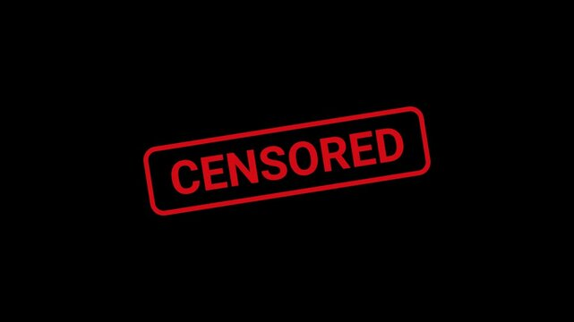

Rules regarding NSFW or similar issues.
NSFW media is strictly prohibited. Any imagery, video, links or audio that include NSFW will be deleted and will also result in an immediate kick or ban, depending on severity. Jokes that include a light mention or reference to NSFW, similar to 'that's what she said' jokes, are allowed, but those that include heavier NSFW will still result in the aforementioned punishments.
All channels are regulated by Automod, which has a list of words or phrases that, when detected in a sentence, cause the sentence to be blocked from sending.
The blocked message is sent to mod logs for us to review, and it can result in a warn or worse. If you spell words in a different way in order to prevent
detection from Automod, this still counts as a rule break and will be punished.
Please remember that staff holds the right to ban words or delete messages on the spot, irrelevant of whether or not it's on the filter.
A summary of filtered words can be found by clicking the image below.
VIEWER DISCRETION IS ADVISED. CONTAINS TRIGGERS.
